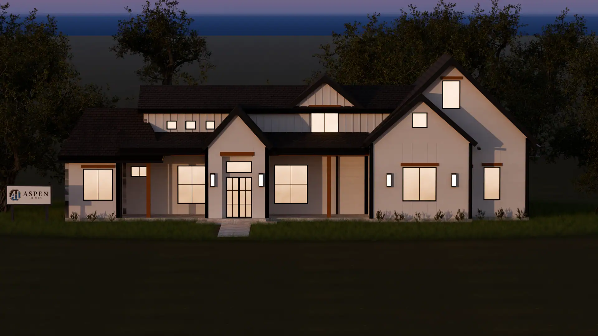

You own land
Share the location, your ideas and your priorities. We match your vision to the site: access, drainage, foundation needs and where the utilities run.

HomeOur process
Our process
Six clear steps, one fixed-price proposal and a construction supervisor who walks the job with you. Here's how an Aspen home comes together.
The six steps
Tell us what you need and where you'd like to live. No lot yet? We'll help you find one. Then we talk square footage, bedrooms and bathrooms, layout, exterior elevations and style. Bring photos and notes.
Choose an Aspen plan, modify one, design from scratch with our in-house architect or bring your own. We walk you through finish specifications and lot costs such as concrete, tree removal, excavation and utilities, while a lender pre-qualifies you.
You receive a fixed-price turnkey proposal and we review exactly what's included. Adjust the specifications to fit your budget and review the updated price at a second meeting, then sign with a 10% deposit.
While your construction loan is finalized, you choose your selections with an interior designer at our design center, ideally before the foundation pour. Then you meet your construction supervisor to go over the schedule and milestones.
Once permits, engineering, builder's risk insurance, the survey and utilities are in place, we break ground. Third-party inspectors check every major stage, and your supervisor holds regular walkthroughs with quality checklists. You're welcome on site too.
A final walkthrough together, then the keys. Your home is covered by the Maverick Builder Warranty.
Build on your lot
Views, sun, outdoor living, the garage and the shape of the land all shape the plan, so we plan the home and the property together.
Share the location, your ideas and your priorities. We match your vision to the site: access, drainage, foundation needs and where the utilities run.
An Aspen team member can help you find a lot. Starting early lets us plan the home and the property side by side.
More than square footage: land conditions, site prep, the foundation, materials and finishes. We review plans and specifications with you before anything is built.
Customize an Aspen house plan, build one as drawn, or design from scratch, with the kitchen, office, guest space or covered outdoor living you want.
We build across Travis, Williamson, Burnet, Milam, Bell, Bastrop, Hays and Blanco counties.
Warranty
Every new Aspen home comes with the Maverick Builder Warranty. If something comes up after move-in, call us right away and we'll take care of it.
Questions
No. We can start at the planning stage, and an Aspen team member can help you find a lot.
Yes. Build an Aspen plan as drawn, customize one, design from scratch with our in-house architect, or bring a plan you already have.
The design and size, your finishes, site preparation, the foundation and utilities. We walk you through finish specifications and lot-specific costs before you receive your fixed-price proposal.
Your property's location if you have one, the size of home you'd like, your must-have spaces, your budget goals, and any plans, photos or inspiration.
Yes: open living areas, a modern kitchen, efficient storage and clean finishes, with farmhouse character outside.
With an interior designer at our design center while your construction loan is finalized, ideally before the foundation is poured.
Step one starts here
Two minutes, in 3D, with your finishes. Then take your Home Brief to the first meeting.
Online · replies instantly
Hi! How can we help with your home?